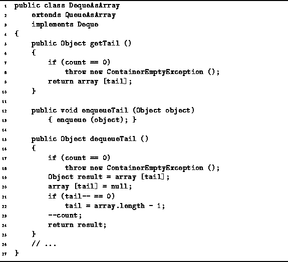

Data Structures and Algorithms
with Object-Oriented Design Patterns in Java
Data Structures and Algorithms
with Object-Oriented Design Patterns in Java
Program  defines the getTail,
enqueueTail, and dequeueTail methods
of the DequeAsArray class.
defines the getTail,
enqueueTail, and dequeueTail methods
of the DequeAsArray class.

Program: DequeAsArray class ``Tail'' methods.
The getTail method simply returns the object found at the tail of the deque, having first checked to see that the deque is not empty. If the deque is empty, it throws a ContainerEmptyException exception. Under normal circumstances, we expect that the deque will not be empty. Therefore, the normal running time of this method is O(1).
The enqueueTail method simply calls the enqueue method inherited from the QueueAsArray class. Its running time was shown to be O(1).
The dequeueTail method removes an object from the tail of the deque and returns that object. First, it checks that the deque is not empty and throws an exception when it is. If the deque is not empty, the method sets aside the object at the tail in the local variable result; it decreases the tail field by one modulo the length of the array; adjusts the count accordingly; and returns result. All this can be done in a constant amount of time so the running time of dequeueTail is a constant.
 Copyright © 1998 by Bruno R. Preiss, P.Eng. All rights reserved.
Copyright © 1998 by Bruno R. Preiss, P.Eng. All rights reserved.